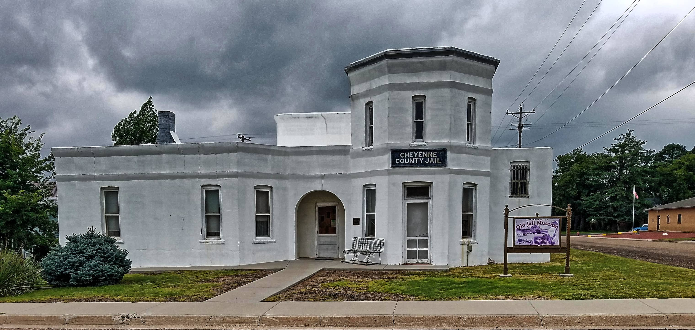
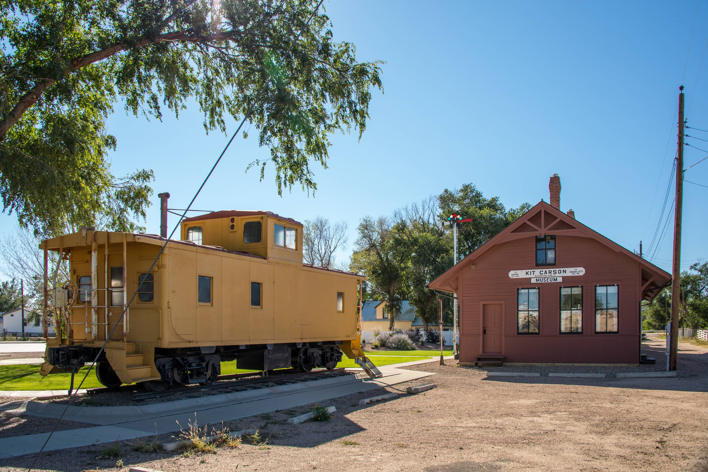

Cheyenne County, Colorado, established in 1889, emerged from the rugged landscapes of Elbert and Bent Counties. Named after the town of Cheyenne Wells, our county seat, Cheyenne County spans 1,782 square miles of diverse terrain. Home to indigenous tribes like the Cheyenne Indians, our region attracted settlers seeking fertile land and economic opportunity.
At the heart of Cheyenne County lies Cheyenne Wells, a historic town that epitomizes our community's spirit. From its founding as a stagecoach stop to its present-day charm, Cheyenne Wells boasts a rich history intertwined with the growth of our county. Today, it serves as a hub of activity and a focal point of our shared heritage, embodying the resilience and perseverance of our residents.
Named for the famed frontiersman, Kit Carson honors the pioneers who shaped our county's destiny. With its own unique history, Kit Carson echoes the adventurous spirit that defines us. From the early days of exploration to its role as a center for trade and commerce, Kit Carson continues to be a vital part of our county, preserving the legacy of those who came before us.
Arapahoe, nestled within Cheyenne County, bridges our past with our future. As an integral part of our community, Arapahoe reflects our values of unity and progress. From its origins as a railroad town to its modern-day contributions to agriculture and industry, Arapahoe serves as a living testament to our county's resilience and adaptability.
In the shadow of the untamed frontier lies Wild Horse, a community steeped in history and tradition. From its rugged landscapes to its resilient inhabitants, Wild Horse embodies our county's enduring spirit. As a gateway to the wilderness, Wild Horse has played a vital role in our county's history, offering refuge and opportunity to those seeking a new life on the frontier.